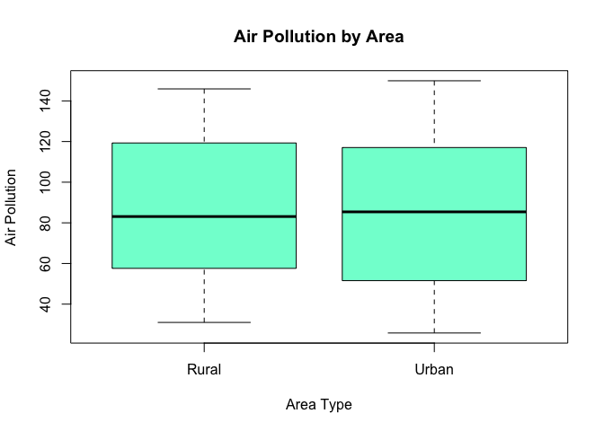

12 Analysis of Covariance (ANCOVA)
12.1 General Linear Models (GLM)
General Linear Models (GLMs) are a class of models that encompass various types of statistical analyses, including ANOVA, and regression. They’re flexible enough to handle different types of data and relationships:
In our journey through statistical modeling, we’ve encountered three primary parametric models, each suited for different types of data scenarios:
- No Groups and No Relationships (H0):
- This scenario often emerges when our ANOVA or regression analysis yields non-significant results.
- What We Report: The grand mean and overall variance or standard deviation. Alternatively, we can use a confidence interval to encapsulate this information.
- Two or More Categories with Significantly Different Means (t-test, ANOVA):
- Here, we delve into data where group means are distinct and significant.
- What We Report: Group means. In classical ANOVA, we might report a common variance or standard deviation, or opt for group-specific measures (potentially through confidence intervals), ensuring to note that variances are not significantly different. With Welch’s t-test, we focus on group-specific variance or standard deviation.
- Two Continuous Variables with a Significant Linear or Monotonic Relationship (Regression):
- This model applies when there’s a significant linear relationship between two continuous variables.
- What We Report: The equation of the regression line, along with its confidence limits. We can also select specific x-values and provide confidence intervals for the predicted y-values at those points.
12.1.1 Model Statements:
- No Groups/Relationships: \(y \sim N(\mu, \sigma^2)\)
- Categories with Different Means: \(y_{i,j} = \mu + \tau_i + \epsilon\) (t-test allows for unequal variance: \(y_{i,j} = \mu + \tau_i + \epsilon_i\))
- Linear Relationship: \(y = \beta_0 + \beta_1x + \epsilon\)
12.1.2 Flexibility and Applicability of GLMs
Ms enable us to model more complex relationships beyond the basic categorical X with continuous Y (as in t-tests and ANOVA) or continuous X with continuous Y (as in regression). They can handle diverse data types and model relationships that aren’t strictly linear, making them crucial for studying environmental systems.
So far, in our exploration of parametric tests, we have primarily focused on two types of relationships:
- A categorical X and a continuous Y: This includes tests like the t-test and ANOVA.
- A continuous X and a continuous Y: This is typically analyzed using linear regression.
General Linear Models (GLMs) significantly expand our analytically capabilities. They are not limited to just these basic scenarios but offer a more versatile toolkit. GLMs are particularly adept at handling:
- More Complex Relationships: They can model scenarios where relationships between variables are not strictly linear.
- Diverse Data Types: GLMs are suitable for various data types, including count data, which is often encountered in environmental studies.
12.1.3 Understanding ANOVA as a linear model:
ANOVA, or Analysis of Variance, is traditionally viewed as a technique to compare means across multiple groups. However, at its core, ANOVA is a linear model. It’s a special case where the predictors are categorical, not continuous. This distinction is important but subtle. Let’s delve into an example that illustrates this concept clearly.
This example should be familiar from lecture. Imagine a researcher is exploring the effects of metal contamination on the species richness of sessile marine invertebrates. They’re particularly interested in the impact of copper and the orientation of the substrate on which these organisms live. To investigate this, they conduct a factorial experiment, measuring species richness across different levels of copper enrichment (None, Low, High) and substrate orientation (Vertical, Horizontal). This setup allows us to not only consider each factor separately but also examine their potential interaction.
The ANOVA framework provides three null hypotheses to test:
There are no differences in species richness across the copper levels.
There are no differences in species richness between substrate orientations.
There is no interaction effect between copper levels and substrate orientation.
These hypotheses can be represented in a linear model as follows:
\(y_{ijk} = \beta_0 + \beta_{Copper_i} + \beta_{Orientation_j} + \beta_{Copper \times Orientation_{ij}} + \varepsilon_{ijk}\)
Here, \(\beta_0\) is the grand mean (intercept), \(\beta_{Copper_i}\) and \(\beta_{Orientation_j}\) are the main effects of the copper levels and orientation, respectively, and \(\beta_{Copper \times Orientation_{ij}}\) represents the interaction between these factors. The \(\varepsilon_{ijk}\) term captures the residual variance, or the random deviation of each observation from the model prediction. The significance of each beta coefficient is tested to determine if it makes a meaningful contribution to the model. A non-significant beta suggests that the corresponding factor or interaction does not have a distinct effect on the outcome, and therefore, might be omitted from the model for parsimony.
When conducting an ANOVA, we’re essentially fitting a linear model with categorical predictors. These predictors are represented by beta coefficients in our model, which show the unique contribution of each factor (like copper levels or substrate orientation) to the outcome variable (such as species richness). The critical question we ask is whether each beta coefficient is significant—does it make a meaningful difference to our model?
In statistical terms, we assess this by examining the F-statistic. The F-statistic is a ratio that compares the amount of variance explained by a particular factor to the variance not explained by the model (within-group variance or error). A higher F-statistic indicates that the factor explains a significant portion of the variability in the outcome variable, while a lower F-statistic suggests that the factor does not contribute much to our understanding of the outcome variable.
\(F = \frac{MS_{Treatment}}{MS_{Error}}\).
In an ANOVA with two factors, we calculate the F-statistic for each factor and their interaction. We don’t need to show the actual calculation here—what matters is that the F-statistic tells us if the factor makes a significant contribution. If it does, we keep the beta coefficient in our model. If not, we may consider omitting it for a simpler model.
It turns out that ANOVAs are just a type of linear model in which the predictor variable is categorical. In practice, we can perform ANOVA using the lm() function in R, treating the categorical predictors as factors. This allows us to use the familiar beta notation and interpret ANOVA as a linear regression model with categorical predictors.
12.2 Moving Beyond Regression and ANOVA to ANCOVA
As we’ve explored statistical modeling, we’ve understood the power of both regression and ANOVA. Now, let’s merge these concepts to broaden our analytical horizon. ANCOVA, or Analysis of Covariance, allows us to examine relationships across different categories, enhancing our ability to compare and understand varying trends within our data.
Consider these questions that may arise in environmental research:
Are dbh (Diameter at Breast Height) and height related similarly for tulip poplars and oaks?
Are biomass and BTUs (British Thermal Units) related similarly for corn stover and Miscanthus?
Does the exposure to PFAS correlate with the lifetime incidence of cancer uniformily across low- and high-income American populations?
This specific subsection of general linear models is known as Analysis of Covariance – ANCOVA. Each of these questions challenges us to compare relationships across categories, which is precisely where ANCOVA shines.
12.2.1 Understanding ANCOVA
With ANCOVA, if we identify a significant difference between two linear relationships, our model will represent two distinct lines. The challenge then becomes integrating these two lines into a single equation.
12.2.1.1 Conceptualizing the Transformation
Consider the following equations:
y = 2x + 3y = 3x - 4
The question we pose is: What modifications are required to transform the first equation into the second? This involves determining the adjustments needed in terms of x (the slope) and the constant term. Understanding this transformation is key to grasping how ANCOVA allows us to compare different linear relationships within a single model framework.
12.3 Introducing the Indicator or Dummy Variable
In General Linear Models (GLMs), indicator or dummy variables allow us to include categorical variables in models traditionally designed for continuous variables.
12.3.1 Understanding Indicator Variables
Indicator variables are used to encode categories. For n categories, you need n-1 indicator variables.
Consider a scenario with 5 species of wombat. We can code these species using 4 indicator variables:
| Ind1 | Ind2 | Ind3 | Ind4 | Species |
|---|---|---|---|---|
| 1 | 0 | 0 | 0 | Species 1 |
| 0 | 1 | 0 | 0 | Species 2 |
| 0 | 0 | 1 | 0 | Species 3 |
| 0 | 0 | 0 | 1 | Species 4 |
| 0 | 0 | 0 | 0 | Species 5 |
In the simplest case of two categories, only one indicator variable is needed:
- 0 = Wombat Species 1
- 1 = Wombat Species 2
12.3.1.1 Flipping the Switch: Indicator Variables in Action
In the context of GLMs, “turning on” an indicator variable means assigning it a value of 1. This action activates certain terms in the equation that are multiplied by the indicator variable, thereby altering the model’s output.
When an indicator variable (xc) is set to 1, it effectively activates any terms in the equation that are multiplied by xc. This can change the slope and/or intercept of the regression line, depending on how xc is used in the equation.
For example, in the equation y = 2xl + 3 + 1xcxl - 7xc:
When
xc= 0 (turned off), the equation simplifies toy = 2xl + 3. Here, the terms1xcxland-7xcare deactivated because they are multiplied byxc, which is 0.When
xc= 1 (turned on), the equation becomesy = (2xl + 3) + (1xl - 7). In this case, the terms1xcxland-7xcare activated, altering the slope and intercept of the line.
12.3.1.2 Visualizing the Effect
The R plots below demonstrate the change in the regression line when the indicator variable is toggled between being active (xc = 1) and inactive (xc = 0).
When xc = 0:
Equation Simplified: y = 2xl + 3
When xc = 1:
Equation Modified: y = (2xl + 3) + (1xl - 7)
The plot on the left shows the regression line when the indicator variable is inactive. The equation simplifies, reflecting a scenario where the categorical variable does not influence the outcome.
The plot on the right illustrates the regression line when the indicator variable is active. The equation now includes additional terms, showcasing how the presence of the categorical variable changes the relationship between xl and y.
Using indicator variables, we can create models in which regression lines change completely depending on which category we’re modeling. If we need to tweak both the intercept and the slope, then we will need two new regression parameters – \(\beta_2\) and \(\beta_3\).
12.3.2 Interaction Term in GLMs
Just like in ANOVA, interaction terms in GLMs tell us whether one variable’s effect on the outcome changes when another variable comes into play.
- Simple Definition: In statistics, an interaction term helps us understand if the effect of one factor (like temperature) on an outcome (like plant growth) changes when another factor (like rainfall) is also considered. It’s like asking, “Does the relationship between temperature and plant growth change when we also consider how much it rains?”
12.3.2.1 The Math Behind The Interactions
- Model Equation Explained:
Let’s break down a typical equation:
\[ y = \beta_0 + \beta_1x_l + \beta_2x_c + \beta_3x_lx_c + \epsilon \]
Here, \(x_lx_c\) is the interaction term, and \(\beta _3\) is its coefficient.
- \(y\) is what we’re trying to predict (like plant growth).
- \(\beta_0\) is the starting point of our prediction when all other factors are zero.
- \(\beta_1x_l\) shows how our prediction changes with changes in a continuous variable (like temperature).
- \(\beta_2x_c\) shows the change with a categorical variable (like type of plant).
- \(\beta_3x_lx_c\) is the key player here. It shows how the effect of our continuous variable (temperature) changes across different categories (types of plants).
- \(\epsilon\) is the error term, accounting for variations we can’t explain with our model.
- \(\beta_1x_l\) and \(\beta_2x_c\) represent the main effects of the continuous and categorical variables, respectively.
12.3.2.2 When is the Interaction Term Significant?
- Significance of \(\beta_3x_lx_c\) :
If \(\beta_3x_lx_c\) (our interaction term) is significant, it means the relationship between our continuous variable (like temperature) and our outcome (plant growth) is different for different categories (like types of plants). If \(\beta_3x_lx_c\) is not significant, it suggests that the effect of our continuous variable is consistent across categories, and we might not need this term in our model.
12.3.2.3 What are the options for our model?
- Full Model with Interaction (\(\beta_0, \beta_1, \beta_2, \beta_3\)):
- When both the categorical (\(x_c\)) and continuous (\(x_l\)) variables are significant, and there is a significant interaction (\(\beta_3\)), the model unfolds into two distinct linear equations for each category of\(x_c\). This indicates that the relationship between the continuous variable and the outcome differs depending on the category of the categorical variable.
- Equations:
- For \(x_c = 0\): \(y = \beta_0 + \beta_1x_l\)
- For \(x_c = 1\): \(y = (\beta_0 + \beta_2) + (\beta_1 + \beta_3)x_l\)
- **Model without Interaction ((_0, _1, _2)):**
- If both the categorical and continuous variables are significant, but there is no interaction, the model simplifies to parallel lines for each category of $x_c $,, indicating that the slope (effect of \(x_l\), is consistent across categories.
- Equations:
- For \(x_c = 0\): \(y = \beta_0 + \beta_1x_l\)
- For \(x_c = 1\): \(y = (\beta_0 + \beta_2) + \beta_1x_l\)
- Simple Linear Regression (\(\beta_0, \beta_1\)):
- If only the continuous variable (\(x_l\)) is significant, the model reduces to a simple linear regression, indicating a linear relationship between\(x_l\) and \(y\), regardless of the category of\(x_c\).
- Equation: \(y = \beta_0 + \beta_1x_l\)
- Two Different Means (T-test Equivalent) (\(\beta_0, \beta_2\)):
- If the continuous variable is not significant but the categorical variable is, the model effectively becomes a comparison of means between two groups (similar to a t-test).
- Equations:
- For \(x_c = 0\): \(y = \beta_0\)
- For \(x_c = 1\): \(y = \beta_0 + \beta_2\)
- Single Mean (One Sample Data) (\(\beta_0\)):
- If neither variable is significant, the model reduces to a single mean, indicating no effect of either the continuous or categorical variable.
- Equation: \(y = \beta_0\)
12.3.3 Terminology in GLMs
Understanding the terminology used in General Linear Models (GLMs) is important for grasping the concepts and effectively communicating your findings. Here are some key terms:
Fixed Factor: This refers to a categorical variable with specific, predefined categories. For example, if you’re studying the effect of different seasons (spring, summer, autumn, winter) on plant growth, ‘season’ is a fixed factor because it represents specific, distinct categories of interest.
Random Factor: This is a categorical variable where the categories represent a random sample from a larger population. For instance, if you’re examining the output quality from different machines in a factory, and these machines are randomly selected from a larger set, then ‘machine’ is a random factor.
Covariate: This is your continuous variable that varies along with the dependent variable (Y). In environmental studies, this could be something like temperature, rainfall, or pollution levels, which you suspect might influence your outcome of interest (like species distribution or plant growth).
12.4 So, What Exactly is ANCOVA?
Analysis of Covariance (ANCOVA) is a statistical method that combines the principles of ANOVA and regression. It’s designed to compare categorical independent variables—such as different treatments or groups—while controlling for the influence of continuous variables. These continuous variables, known as covariates, are typically not the primary focus but could affect the outcome.
For ANCOVA, you need:
- A continuous dependent variable (the main effect you’re studying)
- At least one continuous independent variable (covariate)
- At least one categorical independent variable (which can be either a fixed or random factor)
12.4.1 The Null Hypothesis in ANCOVA
Demystifying the Concept: The null hypothesis in ANCOVA suggests that once we adjust for the covariates, the categorical independent variables do not significantly affect the dependent variable. Essentially, we’re testing whether the apparent differences between groups are genuine or just statistical noise.
Mathematically Speaking: In a simple ANCOVA model, the null hypothesis posits that the adjusted means for each level of the categorical variable are equivalent, once we account for the covariate:
\(H_0: \mu_1 = \mu_2 = \ldots = \mu_t\)
\(H_A: \mu_i \neq \mu_j^* \text{ for some } i \neq j\)
This translates to: “After controlling for the covariate, the different levels of the categorical independent variable do not lead to different outcomes.”
12.4.2 Testing the Null Hypothesis
Conducting the Test: When we perform ANCOVA, we examine the null hypothesis through an omnibus F-test. If we find sufficient evidence to reject the null hypothesis, we infer that significant differences exist among the adjusted means of the dependent variable across the categorical groups, even after considering the covariate.
Interpreting the Findings: Rejecting the null hypothesis indicates that the categorical independent variable has a significant impact on the dependent variable, aside from the covariate’s effect. It’s crucial to remember, though, that statistical significance doesn’t automatically translate to practical significance. We must always consider the results within the specific context and aims of the study.
12.5 Illustrating ANCOVA with an Example
12.5.1 Setting the Stage
Imagine we’re environmental scientists studying the impact of air pollution—a continuous variable—on bird species distribution, our dependent variable. We want to see if this relationship differs between urban and rural areas—our categorical variable. For this purpose, we’ve created a synthetic dataset to model the scenario.
12.5.2 Crafting the Model
With our data in hand, we’d construct an ANCOVA model to discern whether location type influences bird distribution, beyond what can be explained by pollution levels alone. This would involve coding our categorical variable (urban vs. rural) into a dummy variable and including air pollution as a covariate in the model. I’ve done this for you already by creating the synthetic dataset.
- Dataset Overview: Our dataset comprises 200 observations, capturing bird species density in various urban and rural locations, along with corresponding levels of air pollution.
12.5.3 Why We’re Running the ANCOVA
Research Question: Does the effect of air pollution on bird species density differ between urban and rural areas?
Expectation: We predict that air pollution will have a more pronounced negative effect on bird species density in urban areas than in rural areas.
12.5.4 Null and Alternative Hypotheses in our example ANCOVA
- Omnibus Null Hypothesis (\(H_0\)): The null hypothesis posits that once we adjust for air pollution, the mean bird species density does not differ between urban and rural areas.
\(H_0: \mu^*_{\text{Urban}} = \mu^*_{\text{Rural}}\)
\(H_A: \mu^*_{\text{Urban}} \neq \mu^*_{\text{Rural}}\)
Where \(\mu^*_{\text{Urban}}\) and \(\mu^*_{\text{Rural}}\) represent the adjusted means of bird species density for urban and rural areas, respectively..
Null Hypothesis for Slope (\(H_{01}\)): This hypothesis examines if the effect of air pollution on bird species density is consistent between urban and rural areas.
- \(H_{01}\): There is no interaction between air pollution and area type; the slopes are parallel.
- \(H_{A1}\): There is an interaction; the effect of air pollution on bird species density differs between urban and rural areas.
\(H_{01}: \beta_{\text{interaction}} = 0\)
\(H_{A1}: \beta_{\text{interaction}} \neq 0\)
Null Hypothesis for Intercept (\(H_{02}\)): If we find no significant interaction, we then consider the intercepts. This hypothesis tests whether the baseline bird species density, at zero air pollution, differs between urban and rural areas.
\(H_{02}\): The intercepts are the same, indicating no difference in bird species density between urban and rural areas at zero air pollution.
\(H_{A2}\): The intercepts differ, suggesting an inherent difference in bird species density between urban and rural areas, independent of air pollution.
\(H_{02}: \beta_{0\text{,Urban}} = \beta_{0\text{,Rural}}\)
\(H_{A2}: \beta_{0\text{,Urban}} \neq \beta_{0\text{,Rural}}\)
Rejecting \(H_{02}\) would imply that there is an inherent difference in bird species density due to area type, even before considering the air pollution levels.
These hypotheses guide our ANCOVA model and analysis, aiming to isolate the effects of urbanization from the influence of air pollution on avian populations.
12.5.5 Analysis
12.5.5.1 Explore the data
#> AreaType AirPollution BirdDensity
#> 1 Urban 148.9 25
#> 2 Urban 39.7 39
#> 3 Urban 37.6 24
#> 4 Rural 58.8 30
#> 5 Urban 54.9 18
#> 6 Rural 38.2 35Let’s create a summary of our current dataset
summary(data)
#> AreaType AirPollution BirdDensity
#> Length:200 Min. : 25.80 Min. : 6.00
#> Class :character 1st Qu.: 54.45 1st Qu.:18.00
#> Mode :character Median : 83.60 Median :25.00
#> Mean : 86.14 Mean :24.83
#> 3rd Qu.:117.72 3rd Qu.:32.00
#> Max. :149.90 Max. :43.00This will give us a quick statistical summary of our variables.
Now, let’s visualize the distribution of bird density in different areas.
# Boxplot for bird density by area type
boxplot(BirdDensity ~ AreaType, data = data,
main = "Bird Density by Area Type",
xlab = "Area Type", ylab = "Bird Density",
col = "aquamarine", border = "black")And the same for air pollution:
boxplot(AirPollution ~area_type, data=data, main="Air Pollution by Area", xlab="Area Type", ylab= "Air Pollution", col="aquamarine", border="black")
12.5.6 Results of the ANCOVA Model
The anova results
ancova <- aov(BirdDensity ~ AirPollution*AreaType, data=data)
summary(ancova)
#> Df Sum Sq Mean Sq F value Pr(>F)
#> AirPollution 1 6 5.9 0.086 0.7690
#> AreaType 1 1688 1688.0 24.788 1.4e-06 ***
#> AirPollution:AreaType 1 291 291.3 4.277 0.0399 *
#> Residuals 196 13347 68.1
#> ---
#> Signif. codes: 0 '***' 0.001 '**' 0.01 '*' 0.05 '.' 0.1 ' ' 1The linear model results
ancova_lm <- lm(BirdDensity ~ AirPollution*AreaType, data=data)
summary(ancova_lm)
#>
#> Call:
#> lm(formula = BirdDensity ~ AirPollution * AreaType, data = data)
#>
#> Residuals:
#> Min 1Q Median 3Q Max
#> -17.9260 -6.2694 0.4038 5.9023 19.2857
#>
#> Coefficients:
#> Estimate Std. Error t value Pr(>|t|)
#> (Intercept) 31.54648 2.28553 13.803 < 2e-16 ***
#> AirPollution -0.04333 0.02476 -1.750 0.081641 .
#> AreaTypeUrban -11.57676 3.02164 -3.831 0.000172 ***
#> AirPollution:AreaTypeUrban 0.06695 0.03237 2.068 0.039943 *
#> ---
#> Signif. codes: 0 '***' 0.001 '**' 0.01 '*' 0.05 '.' 0.1 ' ' 1
#>
#> Residual standard error: 8.252 on 196 degrees of freedom
#> Multiple R-squared: 0.1295, Adjusted R-squared: 0.1162
#> F-statistic: 9.717 on 3 and 196 DF, p-value: 5.23e-0612.5.6.1 Main Effects:
Air Pollution: The ANCOVA model does not find a significant main effect of air pollution on bird density (p = 0.7690 from ANOVA), indicating no consistent impact across the areas. However, the linear model’s marginal p-value (p = 0.081641) suggests a trend that might have been significant with a larger sample size or reduced variability.
Area Type: There is a significant main effect of AreaType on bird density (p < 0.001), indicating that there are considerable differences in bird density between rural and urban areas, with urban areas showing lower bird density.
12.5.6.2 Interpreting the Beta Coefficients:
Intercept: Reflecting the expected bird density in rural areas at zero air pollution, the intercept is quite high, indicating a relatively healthy bird population in the absence of pollution.
Area Type: The beta coefficient for our area type factor is significantly different from zero (p < 0.001), suggesting a distinct difference in bird density between urban and rural areas. However, this effect is captured more precisely in the interaction term.
Interaction Term: The significant beta for the interaction term confirms our hypothesis that air pollution’s effect on bird density is not uniform across urban and rural areas.
12.5.6.3 Visual Representation:
The scatter plot with regression lines will demonstrate these relationships visually, showing the differing trends for urban and rural areas suggested by the significant interaction term.
12.5.6.4 Interpretation:
The significant interaction term indicates that the simple main effect of air pollution is not adequate to describe its impact on bird density. In urban areas, there seems to be a slightly positive or less negative relationship compared to rural areas, which could reflect a range of urban-specific factors affecting bird populations differently than in rural areas.
12.5.7 Contextualizing the Findings:
The lack of a significant main effect for air pollution in the presence of a significant interaction suggests complex underlying ecological dynamics. These findings call for nuanced environmental management strategies that address the specific challenges and conditions of urban and rural habitats to support bird conservation effectively. By considering the interaction term’s significance, we gain a more accurate understanding of the ecological effects of air pollution, which is essential for developing targeted conservation policies.
12.6 Chapter Summary
In this chapter, we explored the fundamental principles and applications of Analysis of Covariance (ANCOVA), a powerful statistical tool that extends beyond the capabilities of ANOVA by incorporating covariates. We began by understanding the conceptual framework of ANOVA as a linear model, setting the stage for the more complex ANCOVA analysis. Through our discussions, we emphasized the importance of the null and alternative hypotheses in ANCOVA, using practical examples like the study of bird species density in different environments to illustrate these concepts. The chapter highlighted how ANCOVA adjusts for the effects of additional variables, allowing us to more accurately isolate and understand the impact of our factors of interest. By integrating real-world scenarios and focusing on clear, practical applications, we aimed to demystify the process of hypothesis testing in ANCOVA, making it accessible and relevant to environmental science.